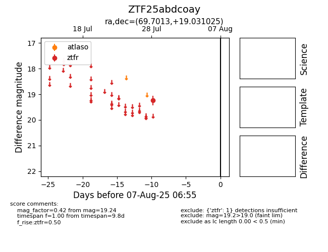

Target ZTF25abdcoay at 2025-08-07 07:30, see:
FINK: fink-portal.org/ZTF25abdcoay
Lasair: lasair-ztf.lsst.ac.uk/objects/ZTF25abdcoay
ALeRCE: alerce.online/object/ZTF25abdcoay
alt names
ZTF25abdcoay (ztf,fink)
coordinates:
equatorial (ra, dec) = (69.7013,+19.03102)
galactic (l, b) = (179.3235,-18.14888)
photometry
last ztfr=19.24
1 ztfr detections
